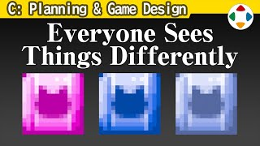
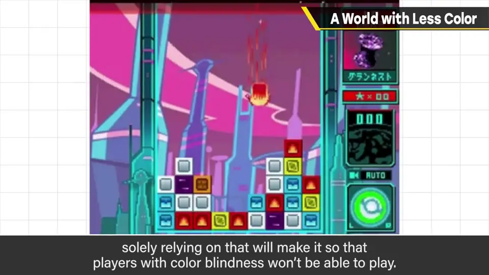
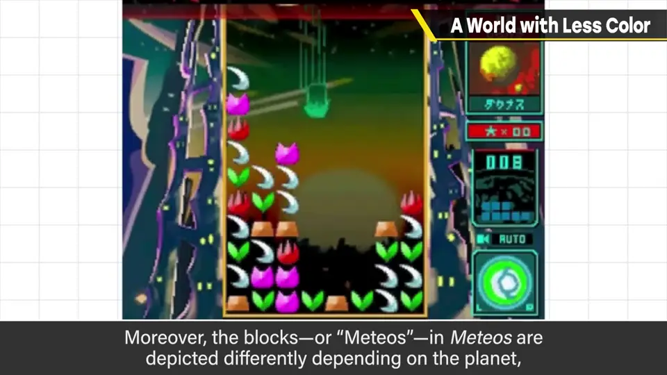
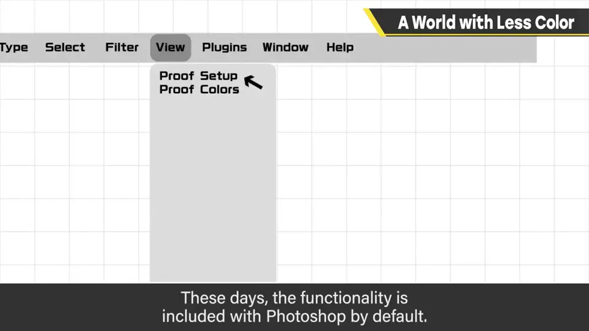
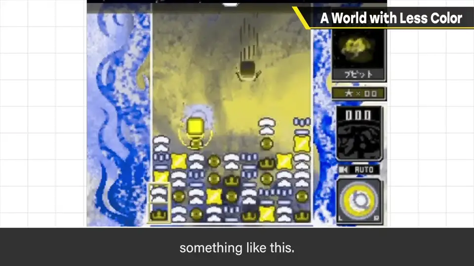
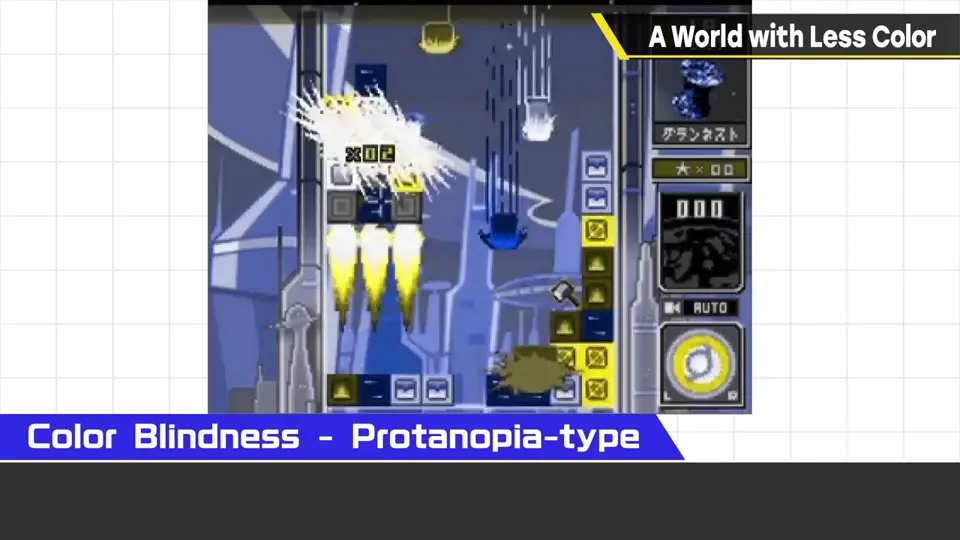
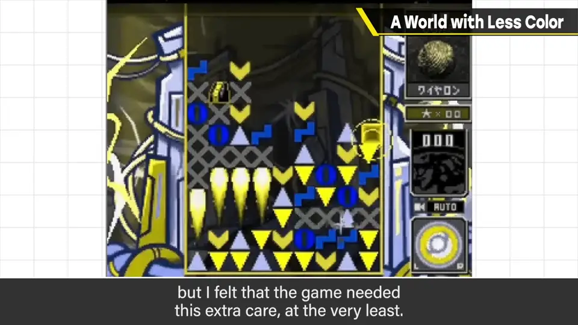
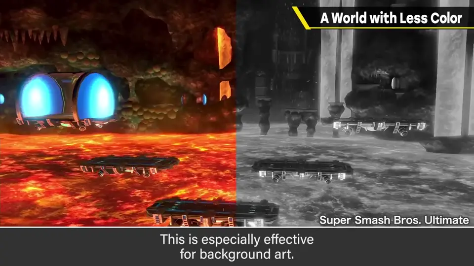
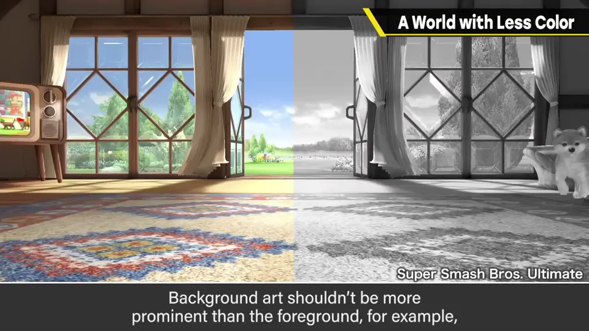

速览
樱井做过的游戏中，必须考虑颜色区分的只有《流星方块》（Meteos）。要完成这款游戏，有一件不可或缺的事：对色弱玩家的支持。游戏规格部分若靠颜色区分构成，只依赖颜色的话色弱玩家就无法游玩；而且流星（方块）的画法因星球种类而异，不是只想着色相就行。有一种叫色弱滤镜的色彩插件，现在已是 Photoshop 的标准功能（视图 → 校样设置）。先用它检查游戏画面——把流星排在一起看，这是 P 型（第 1 型）色觉的一例。色弱的方向性可能各异，但有些颜色看起来相近，樱井特别对这些颜色拉开更大的明度差；但太黑会混进背景色、看不见流星，也需要靠流星的图案补足——至少要多花一层心思。看似理所当然却必须认真做：不只是解谜，道具强化的区别、关卡机关等也可能分辨不出。做游戏时若忘了，请考虑兼顾多样性的调整。另一个与颜色有关的开发技巧：故意把影像或画面转成黑白来检查，对背景特别有效——只剩明暗，就能清楚看出哪里醒目、哪里不醒目；例如背景不能比前景更醒目，有时能防患于未然。这和把画左右翻转来找出走样的技巧有点像。
1. 只靠颜色会让人玩不了 0:04
樱井做过的游戏中，必须考虑颜色区分的只有《流星方块》（Meteos）。要完成这款游戏，有一件不可或缺的事：对色弱玩家的支持。


若游戏规格部分是靠颜色区分构成的，只依赖颜色的话，色弱玩家就玩不了。而且《流星方块》里流星（方块）的画法会随星球种类而不同，不是只考虑色相就行。
2. 用色弱滤镜检查 0:43
有一种叫色弱滤镜的色彩插件，如今已是 Photoshop 的标准功能（视图里的校样设置/校样颜色）。先用它检查游戏画面。



把流星排在一起看——这是 P 型（第 1 型）色觉的一种见法示例。色弱的方向性可能各不相同，但会有一些颜色看起来很接近。

3. 不只是解谜 1:36
这看似理所当然，却是必须认真去做的地方。不只是解谜游戏，道具强化的区别、关卡机关等也可能无法分辨。做游戏时若忘了这件事，请考虑兼顾多样性的调整。
4. 技巧：转成黑白检查 2:10
再分享一个与颜色有关的开发技巧：故意把影像或画面转成黑白来检查，对背景尤其有效。


只剩明亮和暗的部分，就能清楚看出哪里醒目、哪里不醒目。例如背景不该比前景更醒目——有时能防患于未然。
这有点像把画左右翻转来找出走样的技巧。
自测题
1. 樱井为《流星方块》做了哪些色弱支持？
用色弱滤镜检查画面，对看起来相近的颜色拉开明度差，并用方块图案补足。 0:43
2. 除了解谜，哪些地方也可能因色弱无法分辨？
道具强化的区别、关卡机关等。 1:36
3. 把画面转成黑白检查有什么用？
只剩明暗，能清楚看出哪里醒目，例如防止背景比前景更醒目。 2:10